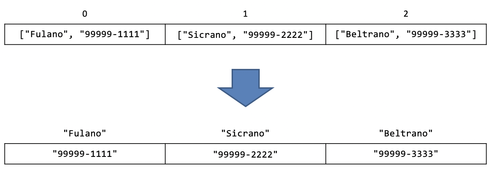

08. Dicionários
O objetivo de aprendizado deste handout é que, ao final da atividade, você seja capaz de utilizar dicionários em seus programas em conjunto com as estruturas que vimos nas aulas anteriores (input, if, while, for, list, etc.). Vamos começar com um aquecimento.
Exemplo com listas
Analise o código abaixo:
EXERCÍCIO 1
Resposta
- Começamos o código criando uma lista na qual cada elemento é uma outra lista contendo dois elementos. O primeiro desses elementos é sempre um nome e o segundo é sempre o seu respectivo telefone;
- O usuário digita um nome;
- Para cada elemento
nome_e_telefonedalistarepetimos o bloco a seguir (note que a variávelnome_e_telefonesempre vai guardar uma lista com exatamente dois elementos, o nome e o telefone):- Armazenamos o primeiro elemento (o nome) de
nome_e_telefoneem uma variávelnome; - Se o nome for igual ao nome digitado pelo usuário executamos o bloco a seguir:
- Armazenamos o segundo elemento (o telefone) de
nome_e_telefoneem uma variáveltelefone; - Imprimimos o
telefoneda pessoa selecionada
- Armazenamos o primeiro elemento (o nome) de
Importante
Mesmo depois de imprimir o telefone da pessoa selecionada, o código continua percorrendo os próximos elementos da lista até o fim.
Acabamos de implementar uma lista de contatos!
No código acima, não seria mais fácil se eu pudesse acessar elementos de uma lista utilizando palavras ao invés de números (índices)? Assim eu poderia acessar, por exemplo, o telefone de "Fulano" com o código lista["Fulano"] ao invés de ter que procurar por todos os elementos da lista. Para isso temos os dicionários!
Dicionários
Um dicionário pode armazenar uma quantidade arbitrária de elementos, assim como uma lista. A diferença é que não estamos limitados a utilizar números como os índices, em dicionários podemos indexar os elementos por quase qualquer coisa (floats, strings, etc.)! No exemplo da lista de contatos, poderíamos ter ao invés de uma lista de nomes e telefones indexados por números, uma lista de telefones indexada por nomes:

O problema disso é que na lista a posição de cada elemento está claramente associada a um número: o primeiro elemento da lista é o 0, o segundo é o 1, o terceiro é o 2 e assim por diante. No dicionário essa associação entre o índice (no exemplo, o nome) e a localização de um valor (o telefone) não é igualmente clara. Independente da ordem dos elementos no dicionário queremos utilizar os nomes para acessar os telefones. Por isso, ao criar um dicionário precisamos ser explícitos sobre qual é o "índice" de cada valor adicionado. Fazemos isso utilizando o seguinte código (ainda utilizando o exemplo acima):
A princípio pode parecer um pouco assustador, mas não se preocupe, com um pouco de prática você vai se acostumar. Vamos entender o que a linha acima está fazendo. Assim como definimos listas utilizando os colchetes [], os dicionários são definidos com chaves {}. Então definimos os pares de "índice" e valor do elemento separados por dois pontos (":").
Chaves e valores
Talvez você tenha reparado que utilizamos aspas quando nos referíamos aos "índices" do dicionário. Na verdade, no dicionário chamamos os índices de chaves (em inglês: "keys") e os elementos armazenados de valores (em inglês: "values"). Vimos também que as chaves e valores estão associados. Esse par chave-valor é chamado de item (em inglês... também é "item"). Por exemplo, em:
As chaves são 'Sicrano' e 'Beltrano', os valores são 18 e 20 e os itens são ('Sicrano', 18) e ('Beltrano', 20).
Acessando valores em um dicionário
Vimos que podemos criar um dicionário colocando os pares de chaves e valores entre { e }. Para acessa um valor em uma determinada chave utilizamos o mesmo formato utilizado em listas. No nosso exemplo, dicionario['Sicrano'] devolve o valor armazenado na chave 'Sicrano', ou seja, '99999-2222'.
EXERCÍCIO 2
Inicialização de dicionários
Já vimos que podemos criar um dicionário indicando a chave e o valor separados por dois pontos:
E que podemos guardar qualquer coisa em dicionários, inclusive listas ou até outros dicionários:
Podemos também criar dicionários vazios de maneira similar às listas:
Tem append?
Em uma lista temos que usar o método .append() para colocar um elemento extra (criando uma posição nova):
Em um dicionário isso não é necessário: basta colocar o novo elemento na nova posição (como fazemos quando queremos substituir um elemento em uma lista):
EXERCÍCIO 3
Verificando se uma chave existe
EXERCÍCIO 4
O resultado esperado do programa acima é o erro KeyError. Por quê?
A chave 'alface' não existe no dicionário, então o dicionário não tem um valor para devolver. Por esse motivo é importante verificarmos se uma chave existe no dicionário antes de tentar acessar seu valor. Para isso utilizamos o operador in:
Nesse caso, o programa vai imprimir: A palavra alface não existe no dicionário.
EXERCÍCIO 5
Percorrendo um dicionário
Para percorrer os elementos de um dicionário vamos utilizar exclusivamente o for. Existem 3 maneiras de percorrer um dicionário utilizando o for. Para compreender as 3 maneiras, precisamos conhecer alguns métodos disponíveis em dicionários:
- O método
.keys()(usado comodicionario.keys()) devolve todas as chaves do dicionário; - O método
.values()(usado comodicionario.values()) devolve todos os valores do dicionário; - O método
.items()(usado comodicionario.items()) devolve todos os itens (pares chave-valor) do dicionário.
Opção 1
A primeira opção para percorrer um dicionário utilizando for é:
Nessa opção, o bloco do for é executado para cada chave do dicionário. Se você precisar do valor associado a essa chave é necessário acessar o valor no dicionário (primeira linha dentro do for). Ela é equivalente a:
O .keys() é redundante nesse caso, apresentamos a versão acima por completude. Você pode sempre usar a primeira versão (sem o .keys()) sem prejuízo.
Opção 2
A segunda opção para percorrer um dicionário possui um resultado similar ao for com listas, ou seja, percorremos somente os valores:
O programa acima vai imprimir kale, cabbage, broccoli (um em cada linha). Note que nessa opção não temos acesso às chaves.
Opção 3
Se você está interessado tanto nas chaves quando nos valores, é possível percorrer a lista da seguinte maneira:
As variáveis port e eng serão inicializadas simultaneamente com a próxima chave e o próximo valor do dicionário.
Removendo um item do dicionário
Assim como em listas, podemos remover um item utilizando o operador del:
EXERCÍCIO 6